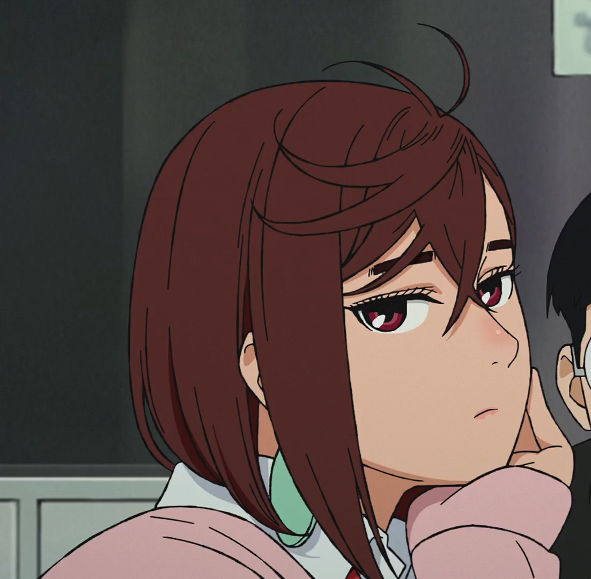
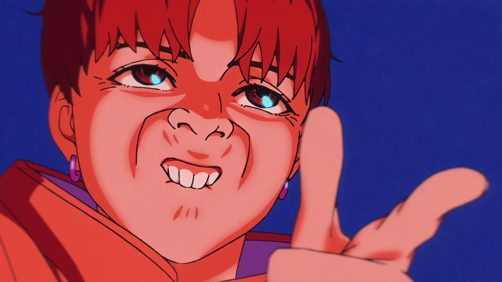

Momo Ayase
Momo Ayase is the main female protagonist of the manga series Dandadan. After forming a friendship with an occult fanatic at school named Ken Takakura, whom she nicknames "Okarun", leads to her awakening her psychic powers.
Okarun

Ken Takakura, also known as Okarun, is the main male protagonist of the manga series Dandadan. He is an occult fanatic who was living an introverted school life until he met Momo Ayase from school. After making bet with her, he is then cursed by the Turbo Granny.
Seiko

Seiko Ayase is a major supporting character of the manga series Dandadan. She is a well-known spirit medium and the grandmother of Momo Ayase. While performing her duties, Seiko provides support to Momo and her friends as they become involved with paranormal activities.
Jiji
Jin Enjoji, also known as Jiji, is one of the main characters of the manga series Dandadan. He is Momo Ayase's childhood friend (and also unknowingly her first crush) whom he lost touch with after moving away.
Aira

Aira Shiratori is one of the main characters of the manga series Dandadan. She is a former popular student at Kami High who later became one of Momo Ayase and Okarun's main allies whenever the two are faced with the paranormal.
Kinta

Kinta Sakata is one of the main characters of the manga series Dandadan. He is a student at Kami High who later became one of Momo and Okarun's main allies whenever the two are faced with the paranormal.